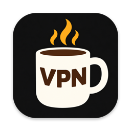
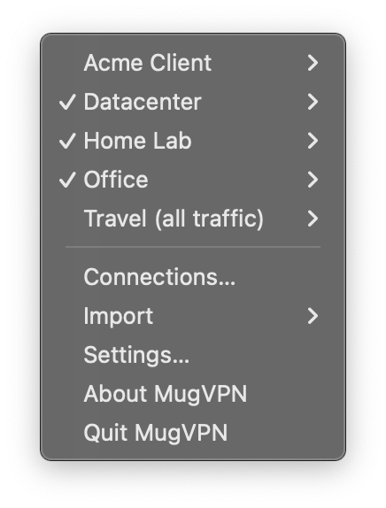
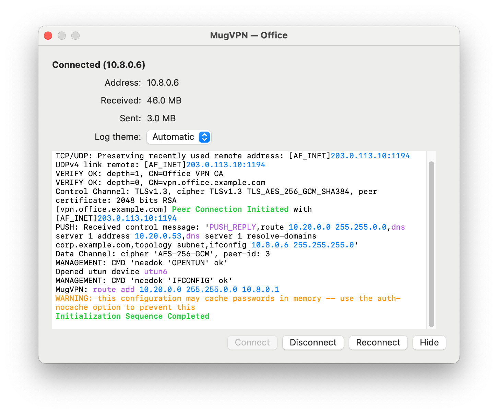
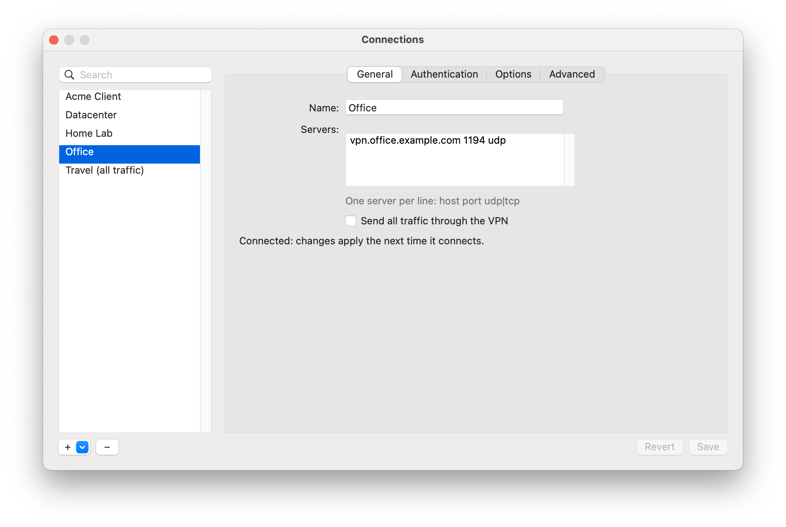
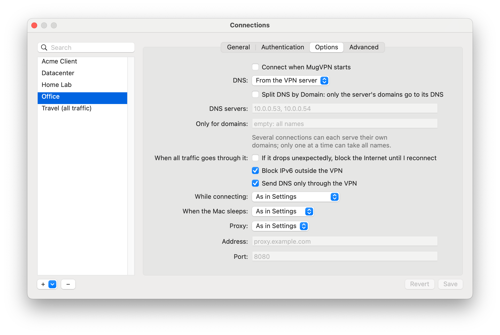
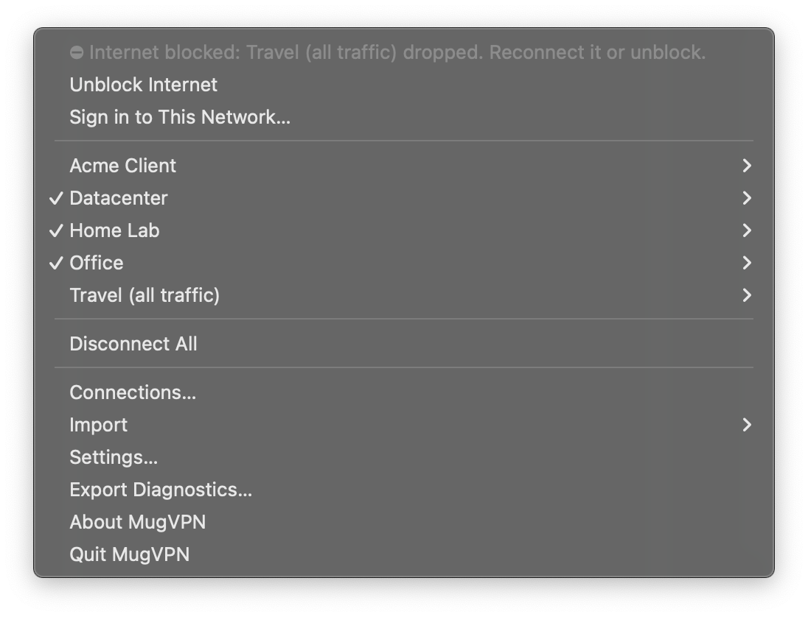

MugVPN
A free OpenVPN client for Mac that keeps several OpenVPN connections up at once — the office, a client and your home lab, each with its own tunnel and DNS.
◆ Free & open source (MIT) ◆ Apple silicon + Intel ◆ macOS 13+ ◆ 22 languages


Why MugVPN
Most Mac VPN apps keep one OpenVPN connection at a time. MugVPN runs several simultaneous OpenVPN connections — each with its own utun interface, routes and split DNS — so names in each network resolve through its own VPN while the rest of your traffic goes as usual. It reads the standard .ovpn profiles your VPN provider or company gives you.
Several connections at once
Connect, disconnect and reconnect each on its own; warnings when two collide (both take all traffic, overlapping routes, DNS).
Split DNS per connection
Each VPN answers for its own domains. Your own DNS servers for a connection, for listed domains or all names.
Kill switch
Per connection: if a connection that carries all traffic drops, your TCP and UDP traffic outside the VPN stays blocked until you reconnect or unblock — enforced by the macOS packet filter.
Leak protection & leak check
No IPv6 or DNS outside the VPN while it carries everything; warns if a route or DNS goes around the tunnel (TunnelVision).
Connections window
Create, edit, duplicate and delete connections in a form or as text: servers, certificates, keys, sign-in.
Easy import
.ovpn files with their keys, Tunnelblick .tblk folders, profiles from a URL or an OpenVPN Access Server.
Every way to sign in
Passwords (in the Keychain), OTP challenges, web/SSO sign-in, PKCS#12 certificates, HTTP proxies.
On the road
Reconnects at once after sleep and when the network changes — another Wi-Fi, a new router; hotel and airport sign-in pages are offered from the menu, even while the kill switch blocks.
For admins and scripts
Persistent connections that start at boot with their own kill switch; a command line with exit codes and JSON; a diagnostics archive without keys or passwords.
openvpn without root
openvpn runs unprivileged; a small helper does what needs root, and checks what it is asked.



MugVPN vs Tunnelblick, Viscosity and OpenVPN Connect
OpenVPN Connect on macOS keeps one connection at a time. Tunnelblick and Viscosity can run several; MugVPN is built around it: per-connection split DNS, conflict and leak warnings, a kill switch that works with several tunnels, and a window to create and edit connections. It is free and open source (MIT), imports Tunnelblick configurations and standard .ovpn files, and its openvpn runs without root — an open-source alternative to Tunnelblick and Viscosity for people who need more than one VPN at a time.
Get it
With Homebrew:
brew install --cask tanderbold/tap/mugvpnOr download the latest MugVPN DMG — signed with a Developer ID and notarized by Apple — open it and drag MugVPN to Applications. Or build it yourself; that needs only the Xcode Command Line Tools:
git clone https://github.com/tanderbold/MugVPN.git
cd MugVPN
tools/build-openvpn.sh # openvpn 2.7 and its libraries, from pinned sources
MUGVPN_ARCH=native tools/build.sh # build/MugVPN.app
cp -R build/MugVPN.app /Applications/On the first connection macOS asks you to allow MugVPN's helper in System Settings › General › Login Items.
How it works
The app (your rights) shows the menu and windows and keeps your profiles and passwords. Each openvpn runs without root; a small LaunchDaemon helper sets up the tunnels and cleans up after them. openvpn 2.7, OpenSSL 3.5, LZ4 and LZO are built from source into the app.